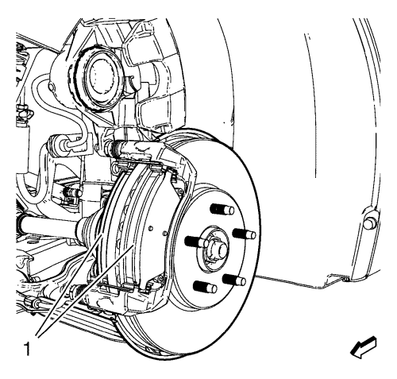

Sustitución del hardware de la pinza del freno delantero
Procedimiento de desmontaje
Advertencia: Consulte Advertencia relacionada con el polvo procedente de los frenos en la sección Prólogo
- Compruebe el nivel de líquido del depósito del cilindro maestro del freno.
- Si el líquido de frenos está a mitad de camino entre el punto de llenado máximo y el nivel permitido mínimo no habrá que quitar nada de líquido de frenos del depósito.
- Si el líquido de frenos está a más cerca del punto de llenado máximo que del nivel permitido mínimo, quite líquido de frenos del depósito hasta que se quede en el punto medio.
- Elevar el vehículo y soportarlo de manera segura. Consultar Elevación del vehículo con un gato .
- Desmonte la rueda del vehículo. Consultar Desmontaje y montaje de la rueda y el neumático .
- Extraiga el perno guía inferior de las pinzas de frenos (2).
Atención: Sujete las pinzas de freno con alambre mecánico fuerte o equivalente cuando se separen del montaje y aún esté conectado el tubo flexible de freno hidráulico. Si no se sujetan las pinzas de esta manera, el tubo flexible de freno tendrá que soportar el peso de las pinzas, lo que puede provocar que se dañe el tubo flexible de freno y esto, a su vez, puede provocar una fuga de líquido de frenos.
- Sin desconectar el tubo flexible del freno hidráulico, gire la pinza (1) hacia arriba y fíjela con un cable mecánico pesado o equivalente.

- Extraiga las dos pastillas de freno (1) del soporte de fijación de la pinza
- Desmonte los muelles de seguridad de las pastillas de freno (1) del soporte de la pinza.
- Desmonte los pasadores guía de la pinza de freno (3) del soporte de fijación de la pinza de disco de freno (1).
- Desmonte las fundas del pasador de la pinza de freno (2) del soporte de fijación de la pinza de disco de freno (1).
Procedimiento de montaje
- Aplique una fina capa de lubricante de silicona para alta temperatura a las fundas del pasador guía de la pinza de freno.
- Monte las fundas del pasador de la pinza de freno (2) en el soporte de fijación de la pinza de freno (1). No golpee las fundas de pasador de funda para introducirlas en el soporte. Asegúrese de que las fundas del pasador de pinza están completamente asentadas en el soporte.
- Aplique una fina capa de lubricante de silicona para alta temperatura a los pasadores guía de la pinza de freno.
- Monte los pasadores guía de la pinza de freno (3) al soporte de fijación de la pinza de disco de freno (1).
- Asegúrese de que las superficies de conexión del herraje de las pastillas de freno están limpias.
- Monte las fijaciones de las pastillas de freno (1) al soporte de la pinza de freno.
Nota: Se tiene que montar la pastilla de disco de freno equipada con sensor de desgaste en el interior del rotor con el borde primario del sensor encarado con el rotor de freno durante el movimiento hacia delante de las ruedas, o en la parte superior de la pastilla cuando se instala en posición de vehículo.
- Monte las pastillas de freno (1) en el soporte de la pinza.
- Desmonte el soporte, y haga girar la pinza de freno (1) hasta su posición por encima de las pastillas de freno de disco y en el soporte de fijación de la pinza.
Precaución: Consulte Precaución con las fijaciones en la sección Prólogo
- Coloque los pernos del pasador guía de la pinza de freno inferior (2) y apriételo a 28 N·m (21 lib. pie).
- Monte el conjunto de neumático y llanta. Consultar Desmontaje y montaje de la rueda y el neumático .
- Bajar el vehículo.
- Con el motor apagado, pise poco a poco el pedal del freno hasta aproximadamente 2/3 de su recorrido.
- Suelte lentamente el pedal.
- Espere 15 segundos, y entonces pise de nuevo gradualmente el pedal hasta aproximadamente 2/3 de su recorrido hasta que el pedal de freno quede aplicado firmemente. Esto asentará correctamente los pistones de la pinza de freno y las pastillas de freno.
- Llene el depósito auxiliar del cilindro maestro al nivel adecuado. Consultar Llenado del depósito acumulador de cilindro maestro .
| © Copyright Chevrolet. All rights reserved |